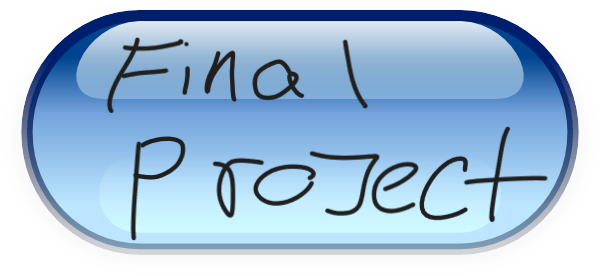

|  |
Made using: Khan Academy Computer Science
For my final project, I created a game where the user controls a character trying to navigate through a cave to collect 'diamonds.' The challenge is that the user must dodge randomly appearing rocks on the canvas, and the difficulty increases gradually as the game speeds up for every collected diamond. For the splash screen, I decided to keep it simple, featuring my bitmoji introducing the game's name and directions, alongside the player and the 'diamond' on the screen, highlighted by a BIG RED start button. I opted to use one of the Khan Academy characters as it could be more universally recognized as a default. Initially, I considered making it gold with stars, but I believe the blue gems can be perceived as diamonds. Throughout the gameplay, I tried to find elements that fit, initially planning on having monsters in the cave. However, I thought the Khan Academy characters were too goofy, so I settled on using rocks. I drew inspiration from a couple of other games such as Temple Run and Subway Surfers.